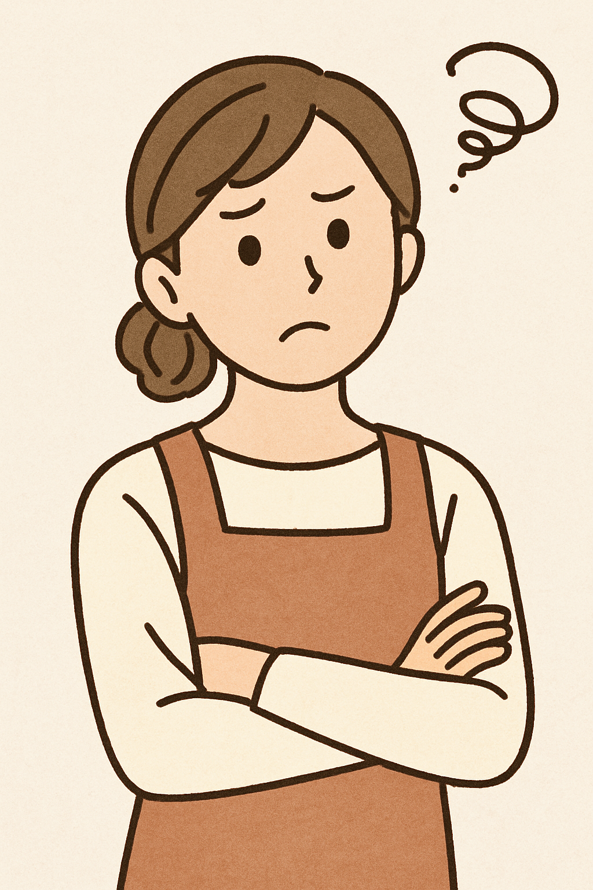

デジタル（電子）ピアノをご注文後、先生に報告したら
「私、電子ピアノの方にはうまく教えられません。」
と言われ、あわてて解約する羽目になりました。
と、おっしゃるのは、最近アルプラの催事で電子ピアノを導入した野洲市にお住まいのHさん。
本物のピアノは場所をとるし、音も大きく近所に気を使います。なにより、子供の様子を見ると、本当に今だけな気がするんです。これから先も本当に続けてくれるか不安でした。
ピアノをがんばって欲しいとは思いますが、飽き性なのでやめてしまったらあまりにもったいないと思ったので…
私も主人も、経験が無いのでどんなピアノがいいかわからず、とりあえずピアノが展示している所へ行きました。いつまで続くかわからないのではじめから高いものは無理だと話したら店員さんがすすめてくださったのが電子ピアノでした。でも、後日先生に報告したら、そう言われてしまったんです！
様々なタイプのピアノ
音色の違いも重要

鍵盤のタッチ感
先生の「電子ピアノの方にはうまく教えられません…」とは、ちょっと誤解を招く表現かもしれませんが、「電子ピアノでは、きめ細かい表現まで指導することは難しい」という意味だったようです。先生にしてみれば"お子さんの上達”を一番に考慮してピアノを準備して欲しいと願ったのでしょう。
では、この失敗をしないためにはどうすればいいでしょう
このような方からいただくご相談です
親御さんにピアノの経験があまりなく、誰に相談したらよいか分からない方に多いようです。ご自身に本物のピアノがある経験はあるけれど、最新の機種については分からないという方もいらっしゃいます。また、「このピアノは、いつまで使えますか？」とご質問される方が多く、上達度合いに応じて買い替える必要があるという考えをお持ちの方も多いようです。
ピアノのご購入相談は、まず先生にしましょう
これが、失敗しないポイントです。
誰に相談していいかわからない。また、何を始めたらいいかわからない。 いざ購入しようと思っても、不安な気持ちを抱いていただくのは当然だと思います。
- ■ご予算と導入時期が決まっている場合は事前に相談しましょう。
-
■ピアノレッスンを教えてくださる先生に、お伝えした方が良いことと質問内容
- 先生がオススメのピアノは、どんなピアノですか？
- ピアノ以外にも習わせたいものが他にあります。
- 発表会やコンクールなどいろいろな経験をさせてあげたい。
- 電子ピアノでないとご用意できない事情がある場合はその理由をお伝えしましょう。
- ■ご不安な気持ちをすべて相談しましょう
ただ、先生はピアノ指導の専門可であっても楽器の専門ではありません。より詳細な話になるとご存知ないことが出てくる場合があります。 例えば、
- ピアノの機種の違い、設置場所、音色、維持費やメンテナンスについてなど。
- 特に、電子ピアノは、そもそも弾いたことがない先生が多いのです。
そこで次に、信頼できる相談先は、
先生が紹介する楽器店やピアノ調律師！
が適切です
具体的にピアノをご検討される際には、知りたいことがたくさん出てくるでしょう。
- 音の響きと材質、お部屋との音響効果は、どの機種が良い？置き場所や音の問題などは？
- 調律やメンテナンス代は？将来的に不要になったら処分できるの？
- 電子ピアノ、中古楽器、新品楽器、我が家にピッタリなのはどれ？
- 予算はどれくらい？どこで試奏できる？
これらを熟知した経験豊富で信頼できるピアノ専門店や、確かな技術を持つ調律師さんを先生に紹介していただくのが一番です。